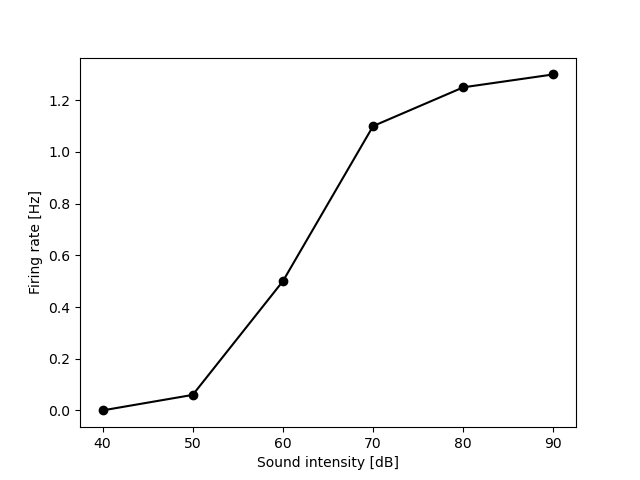
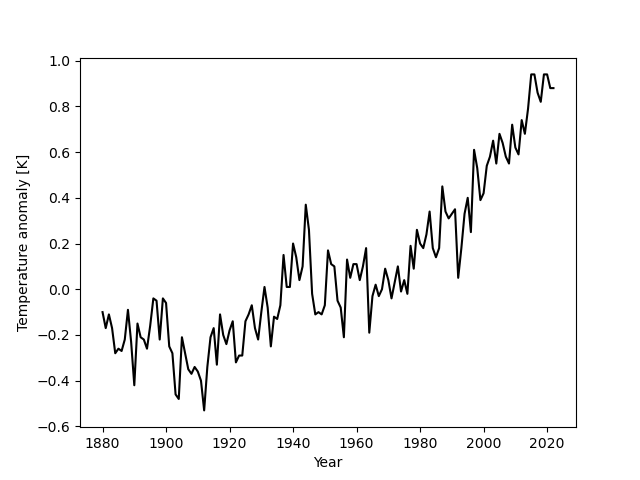
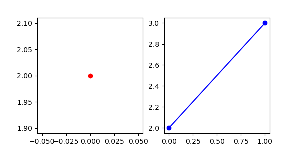
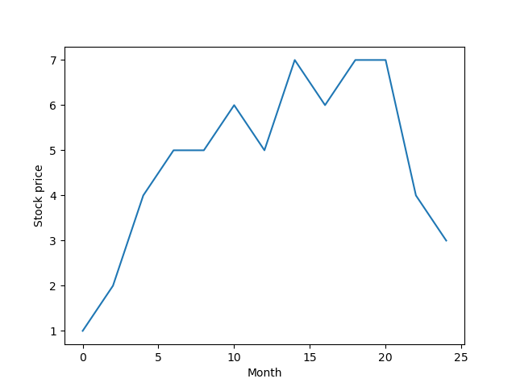

Plotting#
Exercise 1: Customizing plots#
You are given a small toy data set with the firing rates of an auditory neuron to a pure tone at different intensities (decibels, dB) for plotting.
First, plot the data without changing the style or adding annotation.
Then style and annotate the plot:
Style the plot: The different data points should be marked as black dots connected by a black line
Annotate the plot: Add appropriate axis labels with units.
The plot should look roughly like so:

firing_rate1_Hz = [0, .06, 0.5, 1.1, 1.25, 1.3]
sound_intensity_dB = [40, 50, 60, 70 , 80, 90]
# your solution
Exercise 2: Overlaying multiple curves#
We have recorded from another cell and want to compare the intensity tuning curves for both neurons.
Copy the code from the first exercise and modify it so that:
the curves of both cells appear in the same plot.
the color for the curve of the first cell is red, and that the color of the second cell is green.
there is a legend indicating which is cell is which (call them “Cell 1” and “Cell 2”)
firing_rate1_Hz = [0, .06, 0.5, 1.1, 1.25, 1.3]
firing_rate2_Hz = [0, 0, 0.1, 0.5, 0.9, 0.89]
sound_intensity_dB = [40, 50, 60, 70 , 80, 90]
# your solution
Exercise 3: Subplots#
Now, instead of overlaying the curves, we would like to plot them in separate subplots.
Set the axis limits of both plots so that they are the same.
firing_rate1_Hz = [0, .06, 0.5, 1.1, 1.25, 1.3]
firing_rate2_Hz = [0, 0, 0.1, 0.5, 0.9, 0.89]
sound_intensity_dB = [40, 50, 60, 70 , 80, 90]
# your solution
Exercise 4: Plot temperature anomaly values#
Let’s load some anomaly data:
# EXECUTE THIS CELL BUT DO NOT CHANGE IT
import numpy as np
# Load the full anomaly data set
data = np.loadtxt('temperature.csv', skiprows=1, delimiter=',')
years = [int(y) for y in data[:, 0]] # unpack the table and cast years to int
temperature_anomalies = [float(y) for y in data[:, 1]] # cast anomalies to regular floats
print(years[:10])
print(temperature_anomalies[:10])
# EXECUTE THIS CELL BUT DO NOT CHANGE IT
[1880, 1881, 1882, 1883, 1884, 1885, 1886, 1887, 1888, 1889]
[-0.1, -0.17, -0.11, -0.17, -0.28, -0.26, -0.27, -0.22, -0.09, -0.23]
Plot the anomaly values similar to the figure below, with a black line connecting the individual values.
Roughly like so:

# your solution
Exercise 5: The position of plt.show()#
The following code is supposed to plot the data into a single figure with two subplots. Roughly like so:

However, something is wrong with the code - find the error and fixed it:
y = [1,2,3]
# fix this code
import matplotlib.pyplot as plt
plt.figure(figsize=(6, 3))
plt.subplot(1, 2, 1)
plt.plot(y[1], 'or')
plt.subplot(1, 2, 2)
plt.plot(y[1:], 'o-b')
# plt.savefig('1.05_matplotlib_exercises4.png')
plt.show()
Exercise 5: Generating a time axis from indices#
We have the following stock data:
import matplotlib.pyplot as plt
stock_price = [1, 2, 4, 5, 5, 6, 5, 7, 6, 7, 7, 4, 3]
plt.plot(stock_price)
plt.xlabel('Index')
plt.ylabel('Stock price')
Text(0, 0.5, 'Stock price')
The stock prize data was collected at an interval of 2 months. Plot the data with the correct x-axis by generating a list of x-values that contains the time in months for data point. The first value in the list should be 0, the next value 2, and so on, until the last (12th) value, which should be 12 * 2 = 24.

Hint: You can use range to generate list numbers and convert the numbers to months.
# your solution here